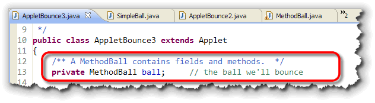
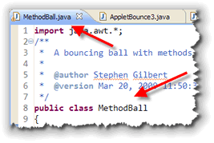
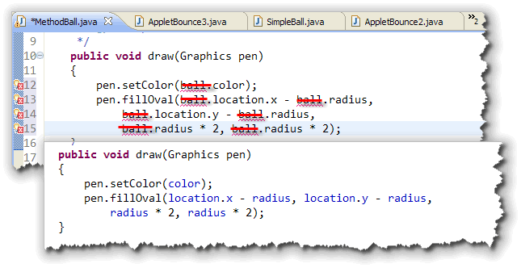
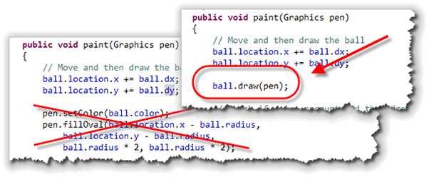
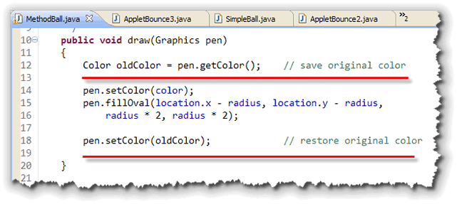
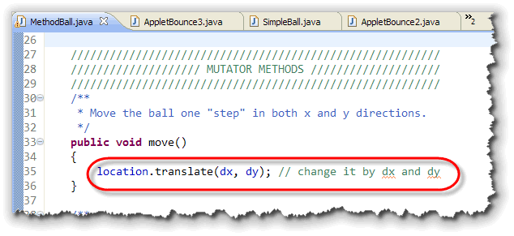
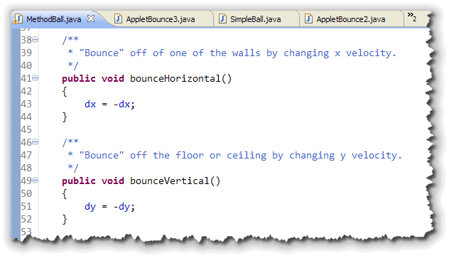
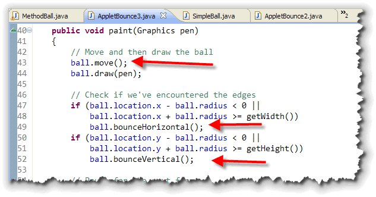
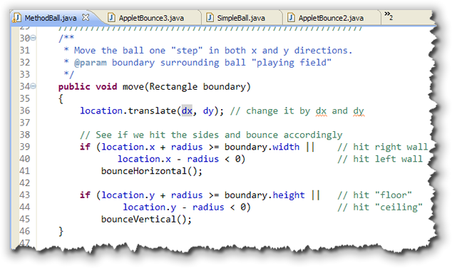
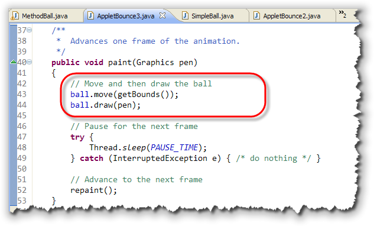

At this point, many of you are
probably thinking that adding
a new class like
At this point, many of you are
probably thinking that adding
a new class like SimpleBall to your program doesn't
have a lot to recommend it; it adds another task to complete,
and, let's face it, the AppletBounce2 program wasn't any
more understandable or elegant than its predecessor. In fact,
maybe the opposite.
You might be surprised to find that I agree with you. For simple programs, you don't necessarily gain anything by creating a class; often just a straightforward program with a few variables is the best way to go.
However, once your programs start to move out of the toy-example realm, classes really can make your code clearer, easier to understand, and more efficient. In fact, I think that you'll find that even with the little programs we're writing here, you'll prefer the version that we finish up with.
Introducing AppletBounce3
While SimpleBall may be one of the simplest classes
possible, but it's not really typical of Java classes;
most Java classes contain both fields and
methods.
In this lesson, we'll continue working with our
bouncing-ball examples and you'll learn to define different
kinds of behaviors to your class. You'll do that by writing
the MethodBall class, which is used in the
AppletBounce3 program shown here:

Other than changing the constructor, used in theinit()
method (to initialize the ball field), the rest of
AppletBounce3 can stay the same as AppletBounce2; as
we add new methods to the MethodBall class, we'll
incorporate them into the applet.
The MethodBall Class

To create theMethodBall class, just:
- make a copy of the
SimpleBallsource code. - change both the file name to MethodBall.java
- change the name of the class so that it matches the file name.
Once that's done, you can start adding new methods.
The draw() Method
Let's start by giving our ball the ability to draw itself.
After all, when you work with GOval objects,
you don't have to do the painting yourself, do you?
To do that, we just need to add a method (I'll call it
draw() inside the MethodBall class.
Now, of course, the new method can't do any drawing
without a pen, so define the method so that it
has a Graphics parameter variable, like this:
 To actually do the drawing, just "borrow" the code from
the applet's
To actually do the drawing, just "borrow" the code from
the applet's paint() method, and remove all
references to the variable ball like this:

We don't need the reference to theball object,
because now, the method is inside the class itself. When we
write pen.setColor(color) it means to use the
color field inside the current object used
to call the method. You don't need to use the "dot" to access
instance variables from methods in the same class.
Instance methods have direct access to instance variables.
Calling the draw() Method
To call the draw() method, we need to
change the code in the AppletBounce3 program's
paint() method like this:

Well! That certainly looks simpler. Notice, to call the ball's
draw() method, you have to pass it a
Graphics object that it can use to do the
actual painting.
A Small Problem
Although the draw() method works find for our
example, it does have one little flaw. Since the method
changes the color used to draw the circle to
the color stored inside the MethodBall object,
any painting that appears after calling
ball.draw(pen) will use the new
color.
Obviously, that's an undesirable side effect. When you have methods that need to change the state of some global resource to carry out their work, you should always save the intial state and then restore it when your method is done.
Here's a final version of the draw() method that
does that:

Mutator Methods
The draw() method uses the fields inside
the MethodBall class to know where to draw and
what color to use for drawing, but it doesn't change
those fields, or return those fields to the caller.
Methods that change the state of an object, by modifying the values stored in the object's fields, are called mutator methods. Simple mutators are sometimes known as setter methods, since they often start with the word set; I'll use the term mutator, though, which is more accurate.
 If you examine the applet's
If you examine the applet's paint() method,
you'll see that there are three places where the ball
object fields are modified:
- The
locationis modified before the ball is drawn, and - The horizontal (
dx) direction field is modified when the ball hits the side walls. - The vertical (
dy) direction field is modified when the ball hits either the ceiling or the floor, as shown in the screenshot on the right.
Let's go ahead and add mutator methods to the
MethodBall class, that the applet can use
in each of these cases. I'll call the methods move(),
bounceHorizontal() (for changing dx) and
bounceVertical() (for changing dy).
Moving the Ball
To move the ball, we have to modify (or mutate) the
location variable, adding dx to
location.x and dy to
location.y. However, since location
is an object variable, of type Point, it
has its own set of methods. We can use the Point
method, translate, to move the point to the
new location.
Just wrap that up in a void method named
move() and you're ready to go. Here's what
that looks like:

Bouncing the Ball
Bouncing the ball is even simpler. If the ball hits the side
walls, just change dx. Suppose the horizontal
velocity (dx) was 4 pixels per frame. That means
the ball must be moving right across the screen, since every
frame will increase location.x by 4 pixels.
When the ball hits the right wall, we want to start moving, at the same speed, to the left. We do that just by changing the sign of the horizontal velocity, so on the next frame, instead of adding 4 pixels to x, we subtract them.
The code for bouncing verticallly is the same, except that
we will mutate the value for the vertical velocity
(dy). Here's what these two methods look like:

Changing AppletBounce3
Even though we've added the new methods to the MethodBall
class, our applet (AppletBounce3) is still doing things
the hard way. Just replace the old code with the new methods, like
this:

An Improved Move
While the move() and bounce() methods
help a little, our applet's paint() method is
still too complex. That's because of the code used to
determine if the ball has hit one of the edges.
Here's the problem:
- To see if the ball has hit the edge, the applet has to grab the radius, and the location from the ball. It has to "look inside" the ball itself to know where its edges are.
- If we were to try to move the code from the applet to a
method inside the
MethodBallclass, the ball would have to know where the edges are.
We have a situation where each class (the applet and the ball) knows part of the information needed, but not all of it. The solution that we're using now is really not that great, because it requires both classes to "know about" the internal details of the other class.
A Better Way
Here's a better solution. Instead of having the applet "peer
inside" the ball, let's have the applet pass the information
that the ball needs, as a parameter. Whenever the applet
asks the ball to move():
- it supplies it with the boundaries that the ball must
stay inside. The applet can do this, by calling it's
getBounds()method, a method that is built into all AWT components. - the ball itself is repsonsible for changing its velocity whenever its trajectory would move it off screen.
Here's the new, modified version of the MethodBall.move()
method:

Notice that:- The method now has a
Rectangleparameter variable, namedboundary. This will let the ball "know" when it goes out of bounds. - The "bouncing" code from the applet's
paint()method has been copied into themove()method. All of theball.prefixes have been removed, since we are now "inside" theMethodBallobject itself, and our methods have direct access to the fields of the class. - Instead of calling the
getWidth()andgetHeight()applet methods, we use thewidthandheightfields in theboundaryparameter.
Incorporating the Improvement
To use the new move() method, we need to change
the code inside the AppletBounce3.paint() method.
Simply remove all of the "bouncing" code, and pass the
Rectangle returned from calling getBounds()
to the move() method, like this:

Looking Back
At the beginning of this lesson, I wrote:
"..classes really can make your code clearer, easier to understand, and more efficient. In fact, I think that you'll find that even with the little programs we're writing here, you'll prefer the version that we finish up with."
So, what do you think? Looking only at the paint()
method, notice that our new applet only:
- has to tell the ball to move itself
- has to tell the ball to paint itself
HOW the ball carries out both of those actions is
entirely encapsulated inside the MethodBall
class itself.
We aren't entirely finished yet, though. It's still possible for our program to reach inside the ball object, and mess things up by accidentally directly modifying the object's fields.
In fact, directly modifying the object's fields is the only way that we currently have for initializing our objects. We'll fix that in the next lesson, when you meet the super EncapsulatedBall class.
Coming Up ...
In this lesson you learned how to add methods to your class.
You wrote methods to perform an action, like the
draw() method. You also wrote methods that modified
the state of the object, like move().
If you want to work with the code we've looked at in this lesson, you can download the completed AppletBounce3.java and MethodBall.java source code files by clicking the links in this sentence.
In the next lesson, we'll put the principle of encapulation
to work and make our data private, and add
construtors to initialize our objects, and
accessors and mutators as the gatekeepers
for our object's data.